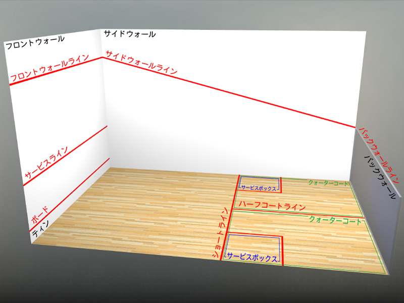

スカッシュについて
引用 日本スカッシュ協会公式チャンネル(YouTube)
引用 日本スカッシュ協会公式チャンネル(YouTube)
目次
- スカッシュとは
- スカッシュのラケットについて
- スカッシュのボールについて
- スカッシュのコートについて
- スカッシュのルールについて
- 参考文献
スカッシュとは
- イギリスで生まれたインドアラケットスポーツ
- 2名または4名で壁に囲まれたコートの中で
ボールを打ち合う競技 - 世界一健康的なスポーツ
↑ 他のスポーツに比べて短時間で充分な運動効果が得られる
スカッシュとは(つづき)
- プレーヤーが交互にボールを打ち合い、
相手が返せなくなった時にポイントを獲得 - ボールを壁に当ててもよく、壁を使って
相手のショットを返すテクニックが必要 - テニスとの違い
➡ 相手と向き合ってボールを打つのではなく、
壁に対してボールを打ち相手を動かす
ラケット🏸について
- スカッシュのラケット
はテニスラケットより
とても軽い - シャフトの数や
ラケットの重心の位置
によっても変わる
➡ 重量は
110〜200g以下
ボール🎾について
- スカッシュのボールはスカッシュ専用のもので、やわらかいゴム製

➡ 非常に速く跳ね返る
コートについて
-

コートについて(つづき)
- シングルスコートの広さは約9.75m×6.4m
- 四方の壁を活用
➡ プレイヤー同士の距離が近い
➡ 戦略性が求められる
ルールについて
- ラリーポイント制の11点先取を1ゲームとし、
3ゲームスまたは5ゲームスマッチで行う - ウォームアップ
➡ 試合前にボールを温めるため、
選手がボールを打ち合う
ルールについて(つづき)
- サービス
➡ サービスボックスに片足か両足を入れ、
サービスラインとフロントフォールラインの
間に打つ。そして、そのボールをハーフコート
ラインとショートラインの間の相手側に入れる
ルールについて(つづき)
- リターン
- スカッシュではオンライン(線上)はアウト
➡ ノーバンかワンバンでフロントウォールに
返す。この時サイドウォールまたは
バックウォールに当ててフロントウォールに
返したボールも有効
参考
道内のスカッシュコート
道内には9つ
札幌には3つ
ご清聴ありがとうございました
参考文献，参考サイト
参考文献，参考サイト
- Reveal.js
- 授業資料